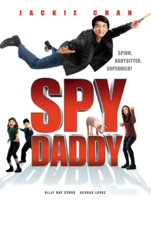
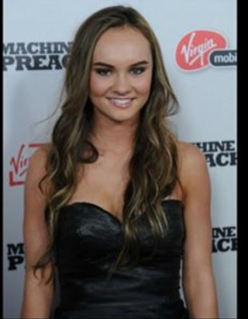
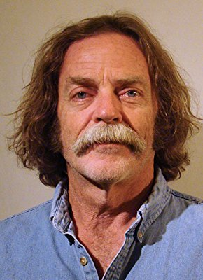

#10639 Spy Daddy
Alternativ: The Spy Next Door (Englischer Titel)
 
 IMDB-Wertung: 5.5 / 10
IMDB-Wertung: 5.5 / 10  Metascore: 27
Metascore: 27 
CIA-Agent Bob Ho möchte sich endlich zur Ruhe setzen um ein normales, geregeltes Leben zu führen. Ein weiterer Grund ist, dass er seine Nachbarin Gillian eine alleinerziehende Mutter, heiraten will. Diese weiß jedoch nichts von Bobs Beruf und möchte auch vorerst mit der Heirat abwarten. Schuld daran sind ihre Kinder, die Bob für einen Spießer halten und schon genug eigene Probleme am Hals haben. Als Gillian erfährt dass ihr Vater im Krankenhaus liegt, muss sie für ein paar Tage weg. Bob bietet ihr an in dieser Zeit auf die Kinder aufzupassen. Doch als so einfach stellt sich die Angelegenheit nicht heraus, denn die Kinder haben sich gegen den Geheimagenten verschworen und sabotieren all seine Bemühungen. Zu allem Überfluss wollen auch noch ein paar russische Verbrecher Bob auf den Zahn fühlen ...
Jahr: 2010
Dauer: 94 Minuten
FSK: 6
Land: USA Studio: LionsgateTonspuren: DTS - ,
Untertitel: Deutsch,
Auflösung: 1080p (1920x1040) Größe: 9820 MB
Genre: Action, Komödie, Familie
Regisseur:  Brian Levant
Brian Levant
Drehbuch: Jonathan Bernstein, James Greer, Gregory Poirier, Jonathan Bernstein, James Greer
Soundtrack: David Newman
Darsteller:
 Jackie Chan als Bob Ho
Jackie Chan als Bob Ho Amber Valletta als Gillian
Amber Valletta als Gillian-  Madeline Carroll als Farren
 Will Shadley als Ian
Will Shadley als Ian- Alina Foley als Nora
- Magnús Scheving als Anton Poldark
- Billy Ray Cyrus als Colton James
 George Lopez als Glaze
George Lopez als Glaze- Katherine Boecher als Creel
 Mia Stallard als Cute Girl
Mia Stallard als Cute Girl- Margaret Murphy als Mom
 Esodie Geiger als Principal
Esodie Geiger als Principal Arron Shiver als Scientist
Arron Shiver als Scientist Lucas Till als Larry
Lucas Till als Larry- Richard Christie als Judge
 Frank Bond als Waiter
Frank Bond als Waiter- Stephen Eiland als Taxi Driver
- Dan Moseley als Tourist
 Tim Connolly als Russian Thug
Tim Connolly als Russian Thug Troy Brenna als Russian Thug
Troy Brenna als Russian Thug Jeff Chase als Russian Thug
Jeff Chase als Russian Thug Mark Kubr als Russian Thug
Mark Kubr als Russian Thug David Mattey als Russian Thug
David Mattey als Russian Thug- Scott Workman als Russian Thug
 Joshua R. Aragon als Restaurant Patron (uncredited)
Joshua R. Aragon als Restaurant Patron (uncredited)- Steven Ray Byrd als CIA Agent (uncredited)
- Karen M. Hudson als Neighbor (uncredited)
-  Michael Neal Powell als Restaurant Patron (uncredited)
- Maverick McWilliams als Chad
- Quinn Mason als Carl
- Kayleigh Burgess als Cute Gymnast
- Stacey Johnson als Princess' Mom
- Valerie Adams als Neighborhood Mother (uncredited)
- Nathan Fane als Restaurant Patron / Mall Patron (uncredited)
- A.C. Hensley als Diner Patron / Mall Shopper (uncredited)
 Timothy Holmes als CIA (uncredited)
Timothy Holmes als CIA (uncredited)- Shawn Lecrone als Mall Walker (uncredited)
- Cynthia Lee als Mall Patron (uncredited)
- Gregory Leiker als Mall Walker (uncredited)
- J.D. Marmion als Mall Walker (uncredited)
Datei: X:\HD-Eastern-Collections\Jackie Chan\Spy Daddy (2010, FSK6, 1920x1040).mkv seit 08.02.2019
Festplatte: HD Eastern+Western
 Es gibt insgesamt 58 Filme in der Gruppe 'HD-Eastern-Collections\Jackie Chan'
Es gibt insgesamt 58 Filme in der Gruppe 'HD-Eastern-Collections\Jackie Chan'